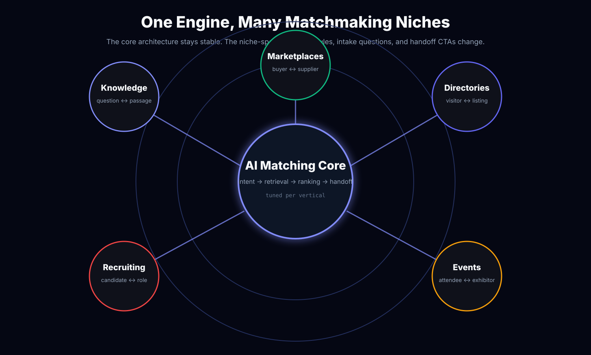
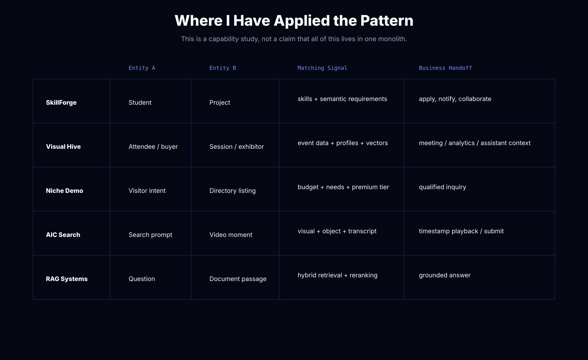
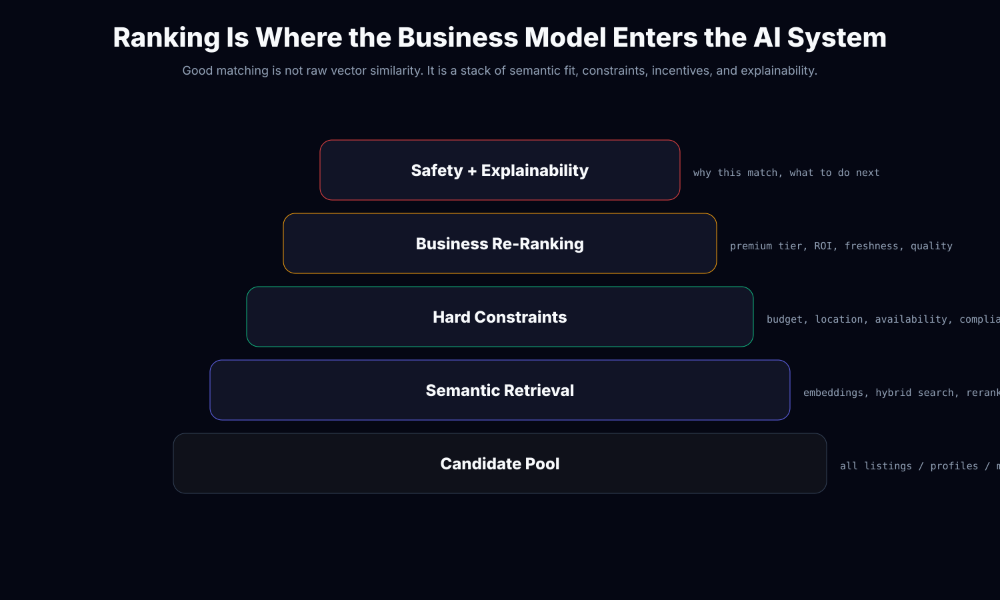
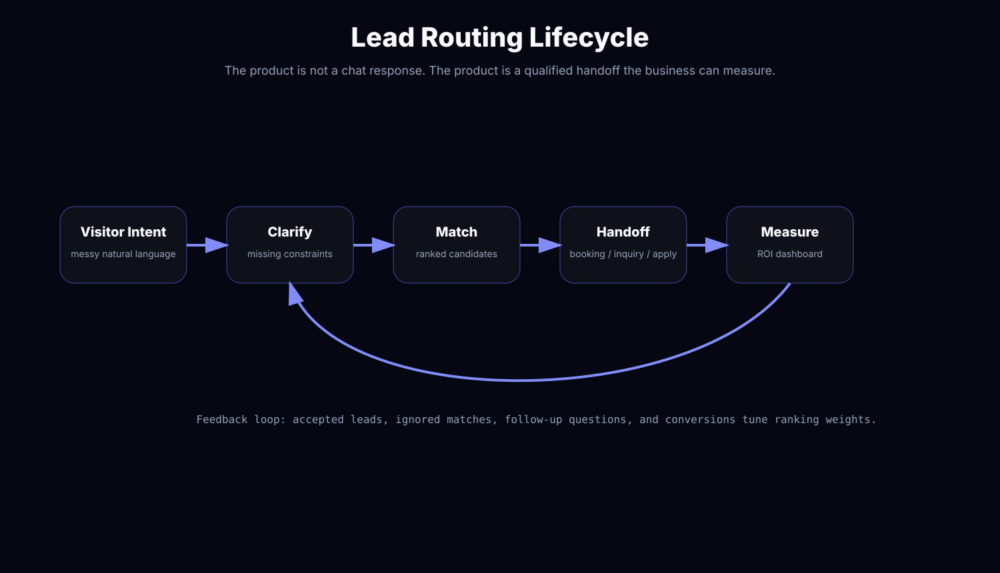
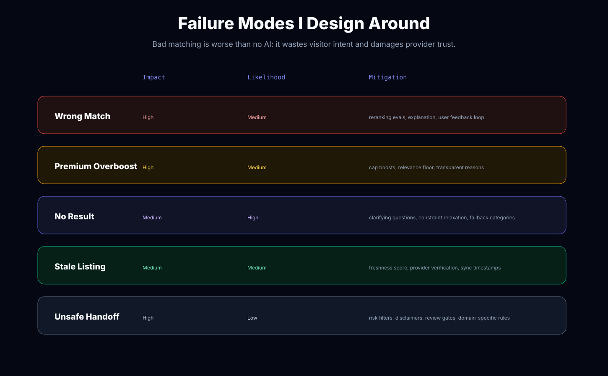

Search Returns Options
Keyword search and filters can list candidates, but they rarely understand nuanced intent or guide users toward a decision.
This is not a single monolithic project. It is a reusable architecture pattern I have applied across marketplaces, event platforms, niche directory prototypes, RAG systems, and multimodal search: capture ambiguous user intent, retrieve candidate entities, apply hard constraints, rerank with business logic, explain the match, and route the user into a measurable handoff.
Visitors do not think in database filters. They describe needs, constraints, budgets, preferences, goals, risk tolerance, timing, and context. The business does not only need “results”. It needs qualified leads, better conversion, provider/member ROI, and proof that premium visibility is worth paying for.
Keyword search and filters can list candidates, but they rarely understand nuanced intent or guide users toward a decision.
A matching engine ranks candidates by fit, constraints, business rules, and user context. It helps a user choose, not just browse.
The final output should be a handoff: inquiry, booking, application, meeting, timestamp submission, or grounded answer that can be measured.
The core architecture stays stable. What changes per niche is the language of the intake flow, the constraints that matter, the ranking weights, the risk rules, and the handoff CTA.

This is the honest and useful framing: the capability exists because I have already built the difficult sub-problems in multiple contexts.

Raw vector similarity is only the first pass. A serious lead-routing system must combine semantic fit with hard constraints, business incentives, freshness, quality signals, safety filters, and explainability.

final_score = semantic_fit
+ constraint_fit
+ business_priority_boost
+ freshness_quality_signal
- safety_or_compliance_penalty
- stale_or_unavailable_penalty
For a directory or marketplace, a good AI layer should move the visitor from vague intent to a qualified action. That means clarifying missing constraints, ranking candidates, explaining why they fit, and routing the user into a handoff the business can track.

I built a niche-tuned demo in `psychable-intake-demo` to test the commercial packaging of this pattern: static directory data, conversational intake, ChromaDB semantic search, Gemini-compatible LLM, membership-tier reranking, follow-up context, and a dashboard that supports the sales story. The niche can change. The engine pattern is the asset.
Intake questions, domain vocabulary, constraints, vertical-specific risk rules, ranking weights, and CTA language.
Semantic retrieval, structured filters, reranking layer, follow-up memory, handoff tracking, analytics dashboard, and demo scripting.
A prospect can see their own listings or profiles becoming a guided matching experience without committing to a full platform rebuild.
FastAPI, SQLite/SQLAlchemy, ChromaDB, static HTML/CSS/JS, Gemini/OpenAI-compatible API, seeded listings, and dashboard metrics. Best for proving ROI quickly.
Postgres or Directus/Supabase, Qdrant/Milvus, hybrid search, rerankers, event analytics, lead tracking, admin controls, API keys, model routing, and observability.
The biggest risk is not that the AI fails to sound smart. The biggest risk is routing the wrong visitor to the wrong provider, overboosting paid listings, hiding good free matches, or creating unsafe handoffs in sensitive niches.

This is the offer I would lead with: take 30-100 public or exported listings, build a private AI matching prototype, show the client how their own users would be routed, and use the result to decide whether a full implementation is worth it.
Conversational intake, vector search over sample data, business-aware reranking, handoff CTA, and a short demo video.
A private test they can click through with their own listings, plus an architecture plan for production hardening.
Prove whether AI matching can increase qualified leads, premium member value, or conversion before rebuilding the platform.
Replace placeholders with captures from a tuned vertical demo: initial intake, match panel, follow-up query, ranking explanation, handoff CTA, and ROI dashboard.

The value is not “chat with your directory”. The value is better routing: more qualified inquiries, stronger provider/member ROI, and a measurable reason to upgrade premium visibility.
A reusable multi-tenant prototype kit: data importer, vertical config, ranking weight editor, lead tracking, analytics dashboard, and a Loom-ready demo mode for outbound sales.
I can build a scoped AI matching prototype using your real listings or profiles, then turn it into a production lead-routing system if the ROI is clear.
Discuss an AI matching prototype mythonggg@gmail.com